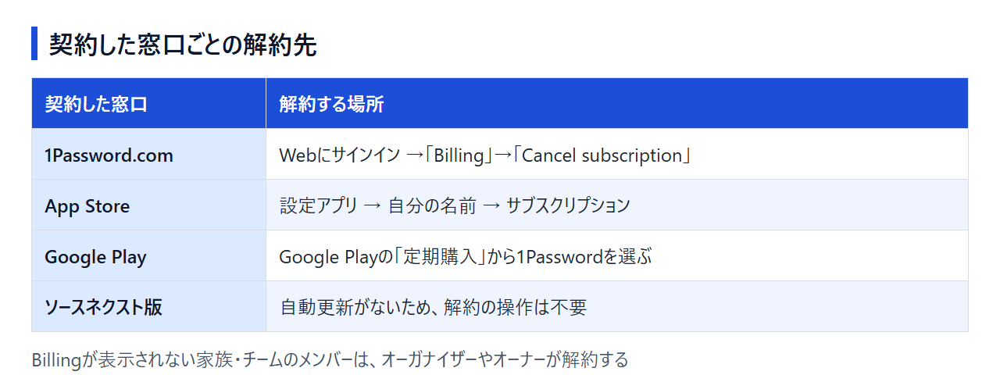
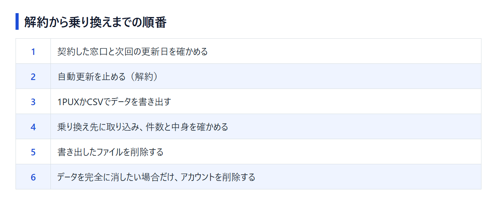

1Passwordの解約方法｜自動更新の止め方と返金・解約後のデータの扱い
1Passwordの請求を止めたいのに、アプリを開いても解約ボタンが見つからない。解約の操作はアプリではなく、契約した窓口（1Password.com、App Store、Google Play）で自動更新を止める形で行います。
解約しても請求期間の終わりまでは使え、公式サイトで契約した場合の返金は原則ありません。期間末にアカウントが凍結されても、データの閲覧と書き出しはできます。編集部は1Passwordを契約していないため、公式ヘルプと公開情報をもとに手順と判断材料を整理しました。
日本語の公式ページからサインインして「Billing」を開くと、契約中のプランと過去の請求書を確かめられます。
結論：解約は早めに、書き出しは期間内に済ませる
解約しても請求期間の終わりまでは使えるので、更新をやめると決めたら、その時点で自動更新を止めて構いません。 公式サイトで契約した場合は返金が原則ないため、残った期間でデータの書き出しと乗り換えを済ませるのが、いちばん無駄のない順番です。
解約の前に、次の3点をはっきりさせておきます。
- どこで契約したか（1Password.com／App Store／Google Play／ソースネクスト版）
- 次回の請求日（更新日）はいつか
- 請求を止めたいだけなのか、保存したデータごと消したいのか
データも消したい方も、いきなりアカウントを削除するのは避けてください。
解約とアカウント削除の違い
解約は自動更新を止めるだけの操作で、データは消えません。 アカウント削除は保存データそのものを消す操作なので、書き出しが終わるまで手を付けないでください。
- 解約：次の更新から請求が止まる。凍結後もサインインして中身を見たり書き出したりできる
- アカウント削除：保管庫のパスワードやメモがアカウントごと消える。削除したあとは、そのアカウントから何も取り出せない
契約した窓口ごとの解約手順
1Password.comで申し込んだ場合はWebの「Billing」から、iPhone・iPad・MacやAndroidのアプリ内で申し込んだ場合はApple・Googleのサブスクリプション管理から解約します。 ソースネクスト版は自動更新がないため、解約の操作は要りません。
自分の窓口がわからないときは、次の順に確かめます。
- App Storeのサブスクリプション一覧か、Google Playの定期購入一覧に1Passwordがある：ストア経由の契約
- ソースネクストでライセンスを買った：ソースネクスト版
- どちらにもなく、ソースネクストでも買っていない：1Password.comにサインインしてBillingを開く
- Billingが表示されない：家族プランやチームに招待されたメンバーで、支払いの管理権限がない。解約はファミリーオーガナイザーやチームのオーナーが行う

1Password.comで契約した場合
Webで申し込んだ契約は、そのままWebから自分で解約できます。サポートに連絡する必要はありません。
- 1Password.comにサインインする
- サイドバーの「Billing」を開く
- 「Cancel subscription」を選ぶ（画面の下のほうにあるので、見当たらなければスクロールする）
- 画面の案内に沿って手続きを終える
メニュー名は英語表示のときのものです。
月払いでも年払いでも、自動更新は最初から有効です。何もしなければ、更新日に次の期間分が請求されます。
Billingの画面では、請求書（Invoices）のダウンロードもできます。最後の請求書を保存しておきたい方は、解約と同じタイミングで済ませておきましょう。
iPhone・iPad・MacのApp Storeで契約した場合
アプリ内課金で始めた契約はAppleが管理しているため、1Password.com側では解約できません。次のどちらかの画面から1Passwordを選んで解約します。
- 設定アプリ → 自分の名前 → サブスクリプション
- App Store → アカウント → サブスクリプション
Apple経由の契約では、個人用から家族用へといったプランの種類も、あとから自分では切り替えられません。
AndroidのGoogle Playで契約した場合
Google Playで始めた契約も、1Password.comからは管理できません。Google Playの「定期購入」から1Passwordを選んで解約します。
月払いから年払いへ変えたいだけの場合も、Google Play経由の契約では、いったん解約して期間が終わってから契約し直す流れになります。
ソースネクスト版（3年版）を使っている場合
ソースネクストで販売されている3年版は、3年分を前払いする方式で、自動更新はありません。期間が終わったあとに買い直さなければ、契約はそのまま終わります。
無料トライアル中にやめる場合
14日間の無料トライアル中に解約すれば、料金はかかりません。トライアルが終わると自動で有料に移り、48時間以内に初回の請求が発生します。試すだけのつもりなら、終了日の前に解約しておいてください。
返金と解約後のデータの扱い
1Password.comで契約した場合、使っていない残りの期間の分も含めて、原則として返金はありません。
App Store・Google Playで契約した場合は、請求を各ストアが管理しているため、ここで説明する1Password.comの返金ルールがそのまま当てはまるとは限りません。
返金は原則なく、日割りの払い戻しもない
未使用の期間が残っていても、日割りでの払い戻しはありません。購入した1Passwordのギフトカードも返金されません。
月払いなら、止め忘れても失うのは1か月分です。影響が大きいのは年払いで、更新日を過ぎると1年分が請求され、途中でやめても戻りません。Individualの月払いは$4.99/月、通常価格の年払いは$47.88/年です。1ドル=157円換算（執筆時点の目安。為替で変動）では、それぞれ約783円、約7,517円になります。
解約しても請求期間の終わりまでは使える
請求期間の終わりは次回の更新日で、月払いなら毎月、年払いなら毎年、最初に請求されたのと同じ日時です。更新日はBillingの画面に表示されるので、解約前に控えておけば、書き出しと乗り換えに使える日数がわかります。
期間を使い切ってから解約する必要はありません。やめると決めた日に手続きしても、使える期間は短くなりません。
期間末に凍結されても、閲覧と書き出しはできる
凍結されてもデータは消えず、アカウントを削除しない限り、サインインして閲覧もエクスポートもできます。
ただし凍結中は、項目の追加や編集、ブラウザでの自動入力、家族やチームへの招待ができません。自動入力に頼っている方は凍結した日から手入力になるので、乗り換え先への移行は期間内に済ませておきましょう。
解約前にデータを書き出す方法
書き出しは1Password 8のデスクトップアプリから、1PUXかCSVの形式で行います。 CSVにはログインとパスワードの項目しか入らず、パスキーはデスクトップからの書き出しに含まれません。乗り換え先に合わせて形式を選び、移らないデータは先に確かめておきます。
公式ヘルプには1Password.comのWeb画面から書き出す手順が載っていないため、パソコンに1Password 8のアプリを入れて作業します。
- 1Password 8を開いてロックを解除する
- Macはメニューバーの「File」→「Export」、Windows・Linuxはサイドバー上部の「…」→「Export」を選び、書き出すアカウントを選ぶ
- アカウントパスワードを入力する
- 形式（1PUXかCSV）を選んで「Export Data」を押す
- 保存先を選ぶ
メニュー名は英語表示のときのものです。解約して凍結されたあとも、アプリにサインインすれば書き出せます。
1PUXとCSVのどちらで書き出すか
1PUXは1Password独自の形式で、カスタムフィールドなどCSVでは落ちてしまう情報も含めて書き出せます。乗り換え先が1PUXを読み込めるなら1PUX、読めないならCSVを選ぶのが基本です。
たとえばBitwardenは.1pux・.1pif・.csvの取り込みに対応していて、Proton Passもブラウザ拡張の設定から1PUXを読み込めます。Google パスワード マネージャーはCSVでの取り込みになります。読み込めないときは、ファイルの1行目の列名がurl・username・passwordになっているかを確かめてください。
書き出しで移らないデータを先に確認する
どの形式でも自動では移らないデータがあります。書き出す前に、次のものが入っていないか見ておいてください。
- パスキー：書き出せるのはiOS・Android版のCredential Exchangeだけで、デスクトップの1PUX・CSVには入らない。乗り換え先がスマホ版からの受け取りに対応していなければ、各サイトで作り直す
- 添付ファイル：CSVには入らない。Bitwardenへ移す場合も、添付ファイルは1件ずつアップロードし直す
- チームアカウントの共有保管庫：Export itemsの権限がない保管庫は書き出せない。管理者に権限を付けてもらうか、管理者側で書き出してもらう。会社のSSOで1Passwordのロックを解除している場合も、管理者が設定を変えない限り書き出せない
書き出したファイルは移行後に削除する
1PUXもCSVも、暗号化されていない平文のファイルです。乗り換え先に取り込んで件数と中身を確かめたら、すぐに削除してゴミ箱も空にしてください。
Secret KeyとEmergency Kitは、データの書き出しとは別物です。Secret Keyは端末で作られて1Password側に控えがなく、なくすと取り戻せません。凍結後にサインインする場面もありうるので、アカウントを削除するまでは保管しておきます。
解約後の乗り換え先
無料で続けたいならBitwardenかProton Pass、ChromeとAndroidが中心ならGoogle パスワード マネージャーが候補になります。
- 無料のまま、保存件数も端末数も気にせず使いたい：Bitwarden
- 無料で始めて、有料に上げるなら日本円で払いたい：Proton Pass
- ChromeとAndroidだけで完結させたい：Google パスワード マネージャー（家族と共有保管庫でまとめて管理していた方には向かない）
Bitwardenの無料プラン（Free）は、保存件数も端末数も無制限です。書き出した1Passwordの1PUXも、そのまま取り込めます。家族で共有するならFamiliesが年払いで$3.99/月、6ユーザーまで使えます。有料プランに上げた場合、契約から30日以内ならサポートに連絡して返金を受けられる点も、返金のない1Passwordとは違います。
日本語の公式ページで、Freeと有料プランで使える機能の違いを確かめられます。
Proton Passは、無料のProton Freeでもログイン件数と端末数に上限がありません。料金は日本円で表示され、年払いならPass Plusが12か月¥4,488、最大6ユーザーで使えるPass Familyが12か月¥7,488です。Pass PlusとProton Unlimitedは、公式サイトで直接買った場合、購入後30日以内なら返金保証の対象です。
無料版はカードを登録せずに始められるので、1Passwordの請求期間が残っているうちに並行して試せます。
Google パスワード マネージャーには専用の有料プランがなく、Googleアカウントの標準機能として使えます。保存先をGoogleアカウントにすれば複数の端末で同期でき、保存できるのは最大10,000件です。パスワードはファミリーグループのメンバーと1件ずつ共有する仕組みで、共有保管庫やチームの管理機能はありません。
Chromeの「パスワードと自動入力」から開く設定画面で、1Passwordから書き出したCSVを読み込みます。1回に取り込めるのは3,000件までです。
よくある質問
解約の前後で迷いがちな点を3つ取り上げます。
アプリの中に解約ボタンが見当たらないのはなぜ？
解約の手続きはアプリではなく、契約した窓口（1Password.com、App Store、Google Play）で行うからです。どこで契約したかわからない場合や、1Password.comでBillingが表示されない場合は、「契約した窓口ごとの解約手順」の見分け方を使ってください。家族プランやチームのメンバーには、Billingそのものが表示されません。
月払いから年払いに変えたいだけのときも解約が必要？
1Password.comで契約しているなら、解約は要りません。BillingのBilling Settingsで支払い間隔を切り替えられます。切り替えると、料金はその時点の公式価格に変わり、以前の料金プランの価格は引き継がれません。解約と再契約が必要になるのは、Google Playで契約している場合です。
会社の1Password Businessに付いてくる家族プランはどうなる？
勤務先が1Password Businessを契約していると、メンバーには1Password Familiesが無料で付きます。業務用のアカウントとは切り離して個人用に使え、リンクはいつでも解除できます。自分で料金を払っているわけではないので、この家族プランについて解約の手続きは要りません。ただし、有効なのはリンクしている間だけです。退職後も使い続けるなら、退職前にリンクを解除して支払い方法を登録してください（以後は自分の支払いになります）。
まとめ：損をしない解約の順番
窓口を確かめて自動更新を止め、請求期間が残っているうちに書き出しと乗り換えを終え、アカウントの削除は必要な場合だけ最後に行います。 この順番なら、返金がなくても次の更新分を払わずに済み、データを失うこともありません。
- 契約した窓口と次回の更新日を確かめる
- 自動更新を止める（解約）
- 1PUXかCSVでデータを書き出す
- 乗り換え先に取り込み、件数と中身を確かめる
- 書き出したファイルを削除する
- データを完全に消したい場合だけ、アカウントを削除する

年払いの更新日が近い方は、1と2だけでも今日のうちに済ませておきましょう。3から先は、請求期間の終わりまでに進めれば間に合います。
公式ページからサインインしてBillingを開けば、契約中のプランを確かめたうえで、そのまま「Cancel subscription」へ進めます。